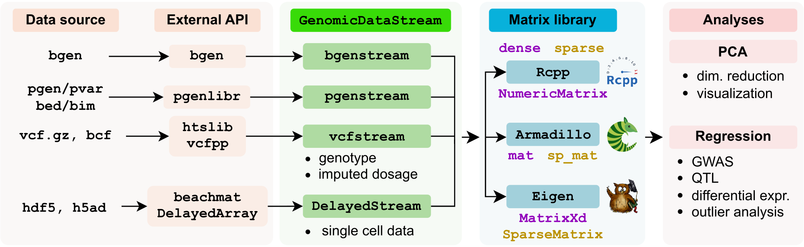

Reading genomic data files (VCF, BCF, BGEN, H5AD, DelayedArray into R/Rcpp in chunks for analysis with Armadillo / Eigen / Rcpp libraries. Mondern datasets are often too big to fit into memory, and many analyses operate a small chunk features at a time. Yet in practice, many implementations require the whole dataset stored in memory. Others pair an analysis with a specific data format (i.e. regresson analysis paired genotype data from a VCF) in way that the two components can’t be separated for use in other applications.
The GenomicDataStream C++ inferface separates
Header-only C++ library
| Package | Ref | Role |
|---|---|---|
| vcfppR | Bioinformatics | C++ API for htslib |
| htslib | GigaScience | C API for VCF/BCF files |
| beatchmat | PLoS Comp Biol | C++ API for access data owned by R |
| Rcpp | J Stat Software | API for R/C++ integration |
| RcppEigen | J Stat Software | API for Rcpp access to Eigen matrix library |
| RcppArmadillo | J Stat Software | API for Rcpp access to Armadillo matrix library |
| Eigen | C++ library for linear algebra with advanced features | |
| Armadillo | J Open Src Soft | User-friendly C++ library for linear algebra |